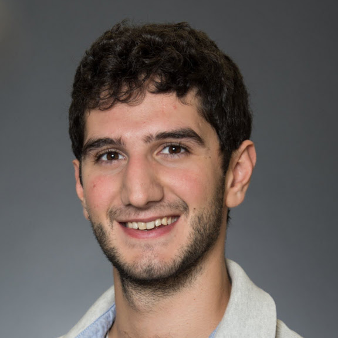

Khaled Saab
I am currently a Member of Technical Staff at OpenAI. Previously, I was a Research Scientist at Google DeepMind. I received my PhD and MS in Electrical Engineering from Stanford in 2023 and 2019, and BS in Computer Engineering from Georgia Tech in 2017. At Stanford, I was lucky to be advised by Daniel Rubin and Chris Ré.
My current research focuses on accelerating biomedical intelligence.
News
- [October 2026] In our prospective study in The Lancet, patients shared their medical histories with AMIE before their primary care visits at Beth Israel Deaconess Medical Center.
- [May 2026] Our multimodal AMIE paper is out in Nature Medicine. AMIE can discuss photos, ECGs, and clinical documents during a diagnostic conversation.
- [April 2026] We introduced HealthBench Professional, a benchmark built from clinical questions, writing tasks, and research requests that clinicians bring to ChatGPT.
- [February 2026] In our Advanced Science paper, we studied how language models can help identify genetic causes of rare diseases.
- [May 2025] AMIE gains vision!
- [April 2025] AMIE is published in Nature!
- [March 2025] Advancing AMIE for longitudinal disease management.
- [April 2024] Introducing Med-Gemini, our latest family of multimodal models that extend the best of Gemini into medicine!
- [January 2024] Announcing AMIE, a diagnostic conversational LLM that surpassed Primary Care Physicians in conversational quality & diagnostic accuracy in a blind randomized study.
- [September 2023] Submit my PhD dissertation at Stanford!
Publications
2026
Reinforcement Learning Towards Broadly and Persistently Beneficial Models
Towards conversational artificial intelligence for disease management
All 20 authorsHide full author list
* Equal contribution
Accelerating scientific discovery with Co-Scientist
All 51 authorsHide full author list
* Equal contribution
Advancing conversational diagnostic AI with multimodal reasoning
All 36 authorsHide full author list
* Equal contribution
HealthBench Professional: Evaluating Large Language Models on Real Clinician Chats
All 16 authorsHide full author list
Genetic Diagnosis and Discovery Enabled by Large Language Models
All 26 authorsHide full author list
* Equal contribution
A large language model for complex cardiology care
All 34 authorsHide full author list
* Equal contribution
2025
Complementary Human-AI Clinical Reasoning in Ophthalmology
All 29 authorsHide full author list
Exploring Large Language Models for Specialist-Level Oncology Care
All 21 authorsHide full author list
Towards physician-centered oversight of conversational diagnostic AI
All 35 authorsHide full author list
Human whole-epigenome modelling for clinical applications with Pleiades
All 34 authorsHide full author list
Towards conversational diagnostic artificial intelligence
All 26 authorsHide full author list
* Equal contribution
Systematic Evaluation of Large Vision-Language Models for Surgical Artificial Intelligence
All 9 authorsHide full author list
2024
Capabilities of Gemini Models in Medicine
All 66 authorsHide full author list
Towards Trustworthy Seizure Onset Detection Using Workflow Notes
2023
A Case for Reframing Automated Medical Image Classification as Segmentation
Effectively Modeling Time Series with Simple Discrete State Spaces
* Equal contribution
Hungry Hungry Hippos: Towards Language Modeling with State Space Models
* Equal contribution
Spatiotemporal Modeling of Multivariate Signals With Graph Neural Networks and Structured State Space Models
2022
Reducing Reliance on Spurious Features in Medical Image Classification with Spatial Specificity
Self-Supervised Graph Neural Networks for Improved Electroencephalographic Seizure Analysis
Domino: Discovering Systematic Errors with Cross-Modal Embeddings
* Equal contribution
ViLMedic: A Framework for Research at the Intersection of Vision and Language in Medical AI
All 9 authorsHide full author list
A multivariate adaptive gradient algorithm with reduced tuning efforts
2021
2020
Weak Supervision as an Efficient Approach for Automated Seizure Detection in Electroencephalography
* Equal contribution